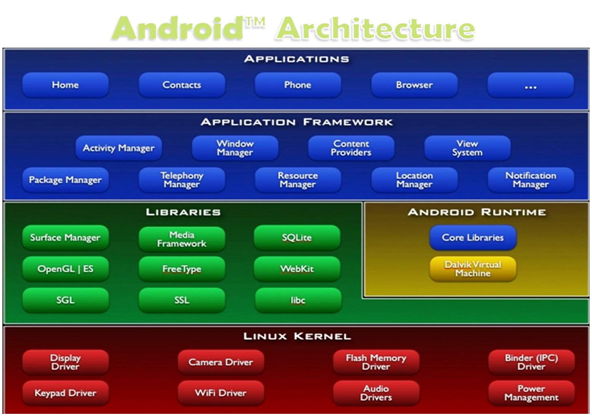
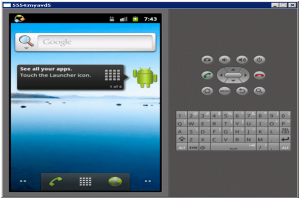

Android Operating System:

What is an Android Operating System & Its Features
The Android operating system is most frequently used on different mobile platforms around the world. It is occupied approximately 75% of shares in the worldwide market by the end of 2020. A company like Open Handset Alliance has developed the first Android that depends on the customized version of the Linux kernel as well as other open-source software. At the initial stage of 2005, Google sponsored the project & it obtained the entire company. In September 2008, the first Android device was released in the market to dominate the mobile industries due to several features like user friendly, the support of the community is huge, customization, manufacturing of android devices in large companies. Consequently, the market examines the demand to develop Android-supported devices with smart developers. So, the Android operating system became a complete set of operating systems for different devices like wearables, mobiles, notebooks, smart TVs, tablets, set-top boxes, etc.
What is an Android Operating System?
Android is a Linux-based operating system it is designed primarily for touch screens mobile devices such as smartphones and tablet computers. The operating system has developed a lot in the last 15 years starting from black and white phones to recent smartphones or mini computers. One of the most widely used mobile OS these days is android. The android is software that was founded in Palo Alto of California in 2003.
Android is a powerful operating system and it supports a large number of applications on Smartphones. These applications are more comfortable and advanced for users. The hardware that supports android software is based on the ARM architecture platform. The android is an open-source operating system that means that it’s free and anyone can use it. Android has got millions of apps available that can help you manage your life one or another way and it is available at low cost in the market for that reason android is very popular.
Android development supports the full java programming language. Even other packages that are API and JSE are not supported. The first version 1.0 of the android development kit (SDK) was released in 2008 and the latest updated version is a jelly bean.
Features of Android Operating System
The unique features/characteristics of the android operating system include the following.
- Near Field Communication (NFC)
- Alternate Keyboards
- IR Transmission
- No-Touch Control
- Automation
- Wireless App Downloads
- Storage & Battery Swap
- Custom Home Screen
- Widgets
- Custom ROMs
- Headset layout
- Storage
- Connectivity: GSM/EDGE, IDEN, CDMA, Bluetooth, WI-FI, EDGE,3G,NFC, LTE,GPS.
- Messaging: SMS, MMS, C2DM (could to device messaging), GCM (Google could messaging)
- Multilanguage support
- Multi-touch
- Video calling
- Screen capture
- External storage
- Streaming media support
- Optimized graphics
Android Architecture
The android is an operating system and is a stack of software components which is divided into five sections and four main layers that is
- Linux kernel
- Libraries
- Android runtime
- Application Framework
- Applications

Linux Kernel
The android uses the powerful Linux kernel and it supports a wide range of hardware drivers. The kernel is the heart of the operating system that manages input and output requests from the software. This provides basic system functionalities like process management, memory management, device management like camera, keypad, display, etc the kernel handles all the things.
Linux is really good at networking and it is not necessary to interface it to the peripheral hardware. The kernel itself does not interact directly with the user but rather interacts with the shell and other programs as well as with the hardware devices on the system.
Libraries
The on top of a Linux kennel there is a set of libraries including open-source web browsers such as WebKit, library libc. These libraries are used to play and record audio and video. The SQLite is a database that is useful for the storage and sharing of application data. The SSL libraries are responsible for internet security etc.
Android Runtime
The android runtime provides a key component called Dalvik Virtual Machine which is a kind of java virtual machine. It is specially designed and optimized for android. The Dalvik VM is the process virtual machine in the android operating system. It is software that runs apps on android devices.
The Dalvik VM makes use of Linux core features like memory management and multithreading which is in java language. The Dalvik VM enables every Android application to run its own process. The Dalvik VM executes the files in the .dex format.
Application Framework
The application framework layer provides many higher-level services to applications such as windows manager, view system, package manager, resource manager, etc. The application developers are allowed to make use of these services in their applications.
Applications
You will find all the android applications at the top layer and you will write your application and install it on this layer. Examples of such applications are contacts, books, browsers, services, etc. Each application performs a different role in the overall applications.
Android Emulator
The Emulator is a new application in the Android operating system. The emulator is a new prototype that is used to develop and test android applications without using any physical device.

The android emulator has all of the hardware and software features like mobile devices except phone calls. It provides a variety of navigation and control keys. It also provides a screen to display your application. The emulators utilize the android virtual device configurations. Once your application is running on it, it can use services of the android platform to help other applications, access the network, play audio, video, store, and retrieve the data.
Android Versions
The different android versions from the beginning to the present are mentioned below from 1.0 to 2.0. Here is the android operating system list.
Android Versions from 1.0 – 1.1
The first Android version like 1.0 was released in the year 2008 but it didn’t have any codename.
Android Version – 1.5
In the year 2009, the 1.5 android version was released which is named Cupcake.
Android Version – 1.6
The Android version – 1.6 was released in the year 2009 which is called Donut. The ability of this version is, it operates on different screen sizes as well as resolutions.
Android Versions from 2.0 – 2.1
Éclair 2.0 version was released after six weeks of the Donut version.
Android Version – 2.2
After four months of 2.1version invention, the Android 2.2 version was released which is called Froyo.
Android Version 2.3
The first true visual identity of Android version 2.3 was released in the year 2010 namely Gingerbread.
Android Version from 3.0 – 3.2
In the year 2011, the versions from 3.0 – 3.2 were released which is named Honeycomb
Android Version 4.0
Android 4.0 was released in the year 2011 which is called Ice Cream Sandwich.
Android Versions 4.1 – 4.3
Android Versions 4.1 to 4.3 were released between 2012 to 2013 which is called Jelly Bean.
Android Version 4.4
Android Version 4.4 was released in Late-2013’s which is called KitKat.
Android 5.0
The version of Android 5.0 was launched in the year 2014, Nov in the Nexus 6 device which is called Lollipop
Android 5.1
This version of Android 5.1 was released in March 2015 called Lollipop
Android 6.0
Android 6.0 Version like Marshmallow was released in Oct 2015.
Android 7.0
Android 7.0 version was released by Google in Aug 2016 called Nougat.
Android 7.1, 7.1.1 & 7.1.2 Nougat
Android 7.1 version was released in Oct 2016, called Nougat
Android 8.0
Android 8.0 version was released in Aug 2017 called Oreo.
Android 8.1.0
Android 8.1.0 version was released in Dec 2017, called Oreo
Android Version 9 Pie
Android version 9 Pie was released in Aug 2018
Android Version 10
Android version 10 was launched in September 2019
Android Version 11
Android version 11 was released recently on September 8th, 2020
.
See also: Android OS